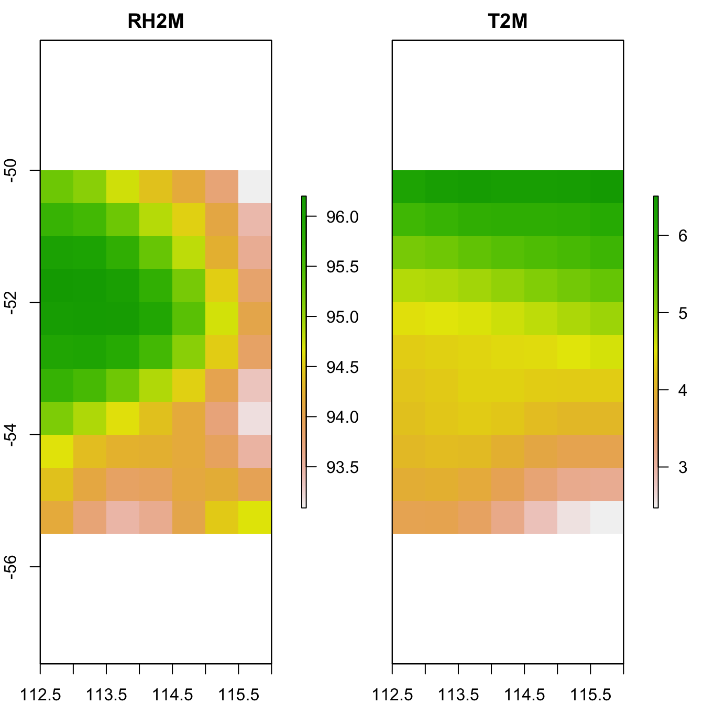
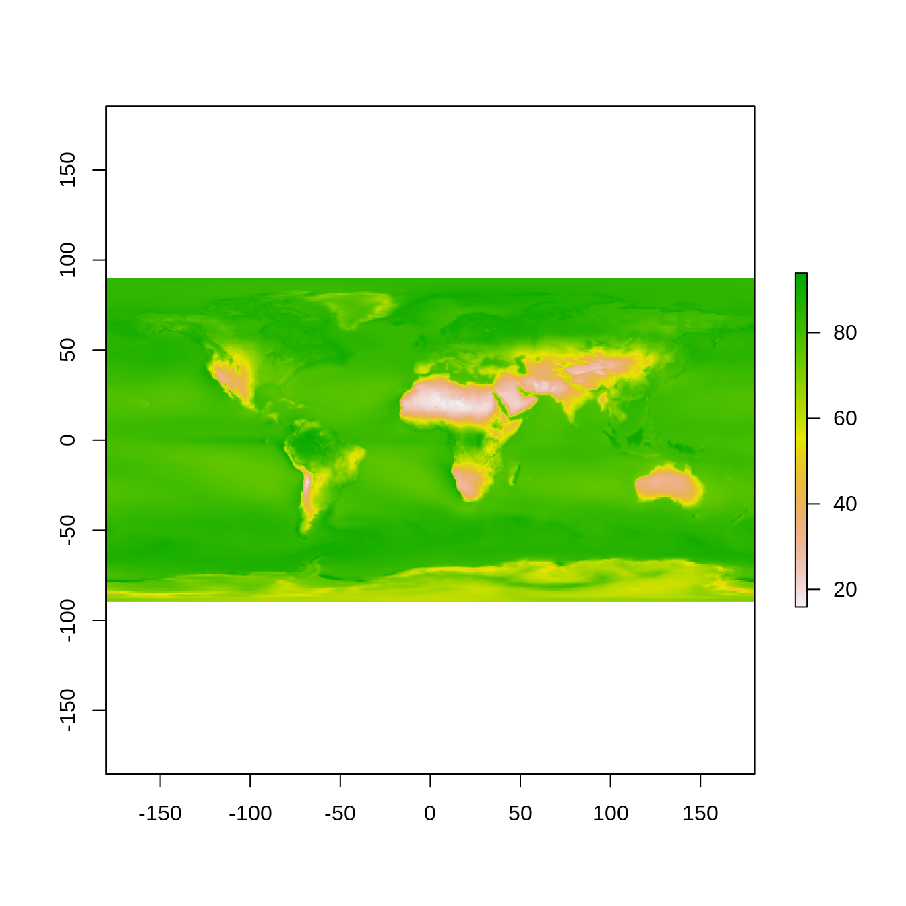
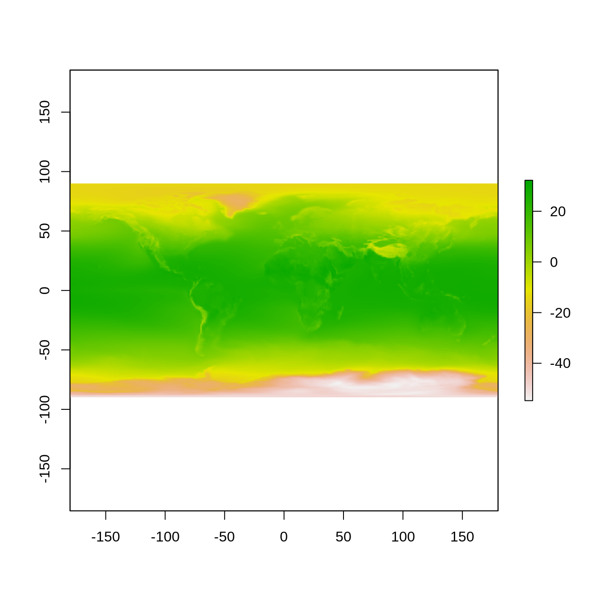
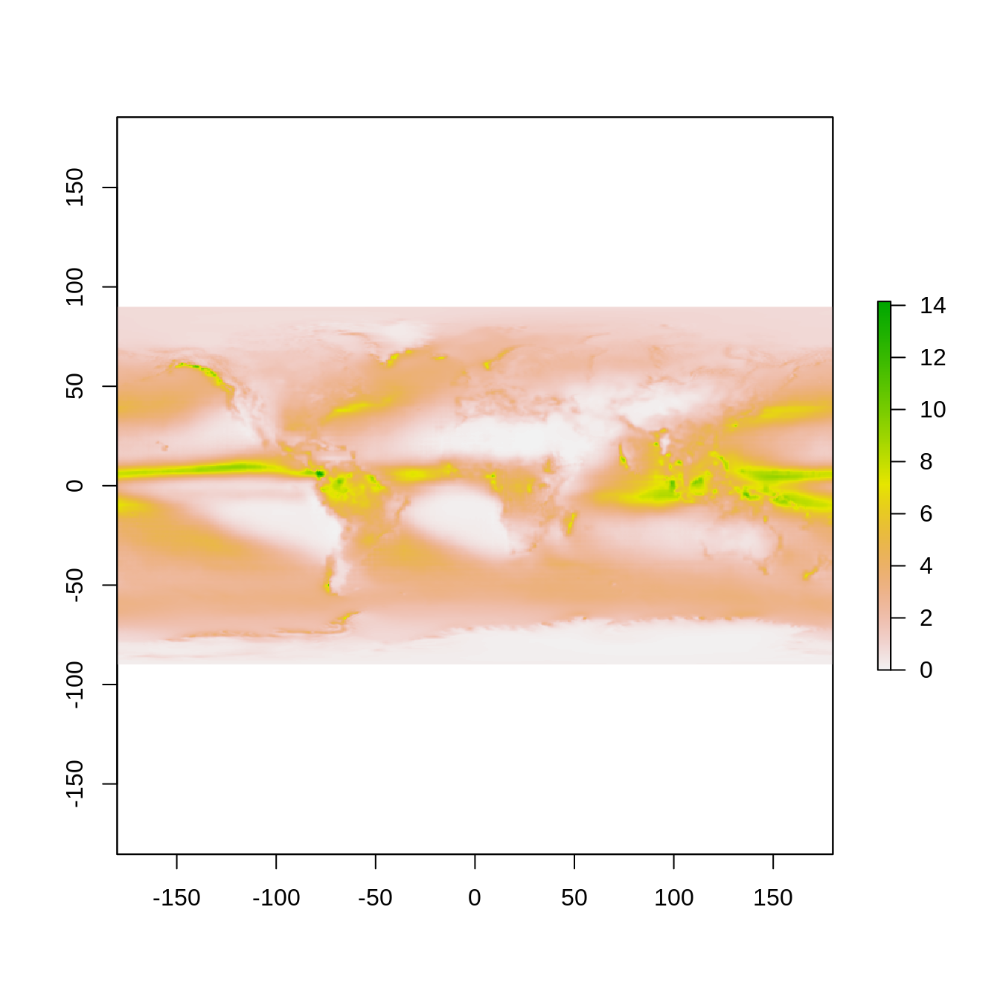

nasapower aims to make it quick and easy to automate downloading NASA POWER global meteorology, surface solar energy amd climatology data data in your R session as a tidy data frame for analysis and use in modelling or other purposes using get_power(). POWER (Prediction Of Worldwide Energy Resource) data are freely available for download through a web interface at a resolution of 1/2 arc degree longitude by 1/2 arc degree latitude. Two other functions are provided to quickly and easily generate weather.met files from the POWER data for use in the Agricultural Production Systems sIMulator (APSIM), create_met() and International Consortium for Agricultural Systems Applications (ICASA) format text files for use in the Decision Support System for Agrotechnology Transfer (DSSAT) framework, create_met().
get_power to Fetch POWER DataThe get_power() function has five arguments as seen in this example and returns a data frame with a metadata header in the current R session.
Fetch daily “AG” community temperature, relative humidity and precipitation for January 1985 for Kingsthorpe, Queensland, Australia.
library(nasapower)
daily_single_ag <- get_power(community = "AG",
lonlat = c(151.81, -27.48),
pars = c("RH2M", "T2M", "PRECTOT"),
dates = c("1985-01-01", "1985-01-31"),
temporal_average = "DAILY"
)
daily_single_ag
#> NASA/POWER SRB/FLASHFlux/MERRA2/GEOS 5.12.4 (FP-IT) 0.5 x 0.5 Degree Daily Averaged Data
#> Dates (month/day/year): 01/01/1985 through 01/31/1985
#> Location: Latitude -27.48 Longitude 151.81
#> Elevation from MERRA-2: Average for 1/2x1/2 degree lat/lon region = 434.55 meters Site = na
#> Climate zone: na (reference Briggs et al: http://www.energycodes.gov)
#> Value for missing model data cannot be computed or out of model availability range: NA
#> Parameters:
#> PRECTOT MERRA2 1/2x1/2 Precipitation (mm day-1) ;
#> RH2M MERRA2 1/2x1/2 Relative Humidity at 2 Meters (%) ;
#> T2M MERRA2 1/2x1/2 Temperature at 2 Meters (C)
#>
#> # A tibble: 31 x 10
#> LON LAT YEAR MM DD DOY YYYYMMDD RH2M T2M PRECTOT
#> <dbl> <dbl> <dbl> <int> <int> <int> <date> <dbl> <dbl> <dbl>
#> 1 152. -27.5 1985 1 1 1 1985-01-01 48.9 25.1 1.07
#> 2 152. -27.5 1985 1 2 2 1985-01-02 41.8 28.4 0.5
#> 3 152. -27.5 1985 1 3 3 1985-01-03 40.4 27.5 0.03
#> 4 152. -27.5 1985 1 4 4 1985-01-04 46.4 24.6 0.1
#> 5 152. -27.5 1985 1 5 5 1985-01-05 50.8 26.5 2.13
#> 6 152. -27.5 1985 1 6 6 1985-01-06 58.6 26.8 5.32
#> 7 152. -27.5 1985 1 7 7 1985-01-07 61.1 27.0 11.9
#> 8 152. -27.5 1985 1 8 8 1985-01-08 66.5 25.1 8.69
#> 9 152. -27.5 1985 1 9 9 1985-01-09 55.8 26.1 2.45
#> 10 152. -27.5 1985 1 10 10 1985-01-10 41.2 27.0 0.36
#> # ... with 21 more rowsFetch daily “AG” community relative humidity and temperature for south east Queensland region.
daily_region_ag <- get_power(community = "AG",
lonlat = c(150.5, -28.5 , 153.5, -25.5),
pars = c("RH2M", "T2M"),
dates = c("1985-01-01", "1985-01-02"),
temporal_average = "DAILY")
daily_region_ag
#> NASA/POWER SRB/FLASHFlux/MERRA2/GEOS 5.12.4 (FP-IT) 0.5 x 0.5 Degree Daily Averaged Data
#> Dates (month/day/year): 01/01/1985 through 01/02/1985
#> Location: Regional
#> Elevation from MERRA-2: Average for 1/2x1/2 degree lat/lon region = na meters Site = na
#> Climate zone: na (reference Briggs et al: http://www.energycodes.gov)
#> Value for missing model data cannot be computed or out of model availability range: NA
#> Parameters:
#> RH2M MERRA2 1/2x1/2 Relative Humidity at 2 Meters (%) ;
#> T2M MERRA2 1/2x1/2 Temperature at 2 Meters (C)
#>
#> # A tibble: 98 x 9
#> LON LAT YEAR MM DD DOY YYYYMMDD RH2M T2M
#> <dbl> <dbl> <dbl> <int> <int> <int> <date> <dbl> <dbl>
#> 1 151. -28.2 1985 1 1 1 1985-01-01 39.7 26.5
#> 2 151. -28.2 1985 1 1 1 1985-01-01 40.4 25.8
#> 3 152. -28.2 1985 1 1 1 1985-01-01 47.0 24.0
#> 4 152. -28.2 1985 1 1 1 1985-01-01 51.8 23.9
#> 5 153. -28.2 1985 1 1 1 1985-01-01 56.2 24.9
#> 6 153. -28.2 1985 1 1 1 1985-01-01 62.5 26.0
#> 7 154. -28.2 1985 1 1 1 1985-01-01 74.7 26.1
#> 8 151. -27.8 1985 1 1 1 1985-01-01 41.3 26.5
#> 9 151. -27.8 1985 1 1 1 1985-01-01 43.4 26.0
#> 10 152. -27.8 1985 1 1 1 1985-01-01 47.6 24.8
#> # ... with 88 more rowsFetch interannual solar cooking parameters for south east Queensland region.
interannual_sse <- get_power(community = "SSE",
lonlat = c(150.5, -28.5 , 153.5, -25.5),
dates = c("1984", "1985"),
temporal_average = "INTERANNUAL",
pars = c("CLRSKY_SFC_SW_DWN",
"ALLSKY_SFC_SW_DWN")
)
interannual_sse
#> NASA/POWER SRB/FLASHFlux/MERRA2/GEOS 5.12.4 (FP-IT) 0.5 x 0.5 Degree Interannual Averages/Sums
#> Dates (month/day/year): 01/01/1984 through 12/31/1985
#> Location: Regional
#> Elevation from MERRA-2: Average for 1/2x1/2 degree lat/lon region = na meters Site = na
#> Climate zone: na (reference Briggs et al: http://www.energycodes.gov)
#> Value for missing model data cannot be computed or out of model availability range: NA9
#> Parameters:
#> ALLSKY_SFC_SW_DWN SRB/FLASHFlux 1/2x1/2 All Sky Insolation Incident on a Horizontal Surface (kW-hr/m^2/day) ;
#> CLRSKY_SFC_SW_DWN SRB/FLASHFlux 1/2x1/2 Clear Sky Insolation Incident on a Horizontal Surface (kW-hr/m^2/day)
#>
#> # A tibble: 196 x 17
#> LON LAT PARAMETER YEAR JAN FEB MAR APR MAY JUN JUL
#> <dbl> <dbl> <chr> <dbl> <dbl> <dbl> <dbl> <dbl> <dbl> <dbl> <dbl>
#> 1 151. -28.2 CLRSKY_S… 1984 8.5 7.96 6.92 5.54 4.49 3.89 4.14
#> 2 151. -28.2 CLRSKY_S… 1985 8.87 8.1 6.94 5.6 4.44 4.03 4.2
#> 3 151. -28.2 ALLSKY_S… 1984 6.11 6.83 6.28 4.6 4.02 3.46 2.58
#> 4 151. -28.2 ALLSKY_S… 1985 8.2 7.15 6.02 4.79 3.89 3.44 3.8
#> 5 151. -28.2 CLRSKY_S… 1984 8.45 8.09 6.77 5.5 4.41 3.95 4.15
#> 6 151. -28.2 CLRSKY_S… 1985 8.76 8.03 6.93 5.57 4.39 3.93 4.2
#> 7 151. -28.2 ALLSKY_S… 1984 5.82 6.43 5.95 4.41 3.89 3.54 2.43
#> 8 151. -28.2 ALLSKY_S… 1985 7.98 6.86 5.74 4.46 3.67 3.34 3.8
#> 9 152. -28.2 CLRSKY_S… 1984 8.45 8.09 6.77 5.5 4.41 3.95 4.15
#> 10 152. -28.2 CLRSKY_S… 1985 8.76 8.03 6.93 5.57 4.39 3.93 4.2
#> # ... with 186 more rows, and 6 more variables: AUG <dbl>, SEP <dbl>,
#> # OCT <dbl>, NOV <dbl>, DEC <dbl>, ANN <dbl>Global data are only available for the climatology temporal_average, setting this argumet as such will fetch global data.
Fetch global “AG”" climatology for temperature, precipitation and relative humidity.
climatology_ag <- get_power(community = "AG",
pars = c("T2M", "PRECTOT", "RH2M"),
temporal_average = "CLIMATOLOGY"
)
climatology_ag
#> NASA/POWER SRB/FLASHFlux/MERRA2/GEOS 5.12.4 (FP-IT) 0.5 x 0.5 Degree Climatologies
#> 22-year Additional Solar Parameter Monthly & Annual Climatologies (July 1983 - June 2005), 30-year Meteorological and Solar Monthly & Annual Climatologies (January 1984 - December 2013)
#> Location: Global
#> Value for missing model data cannot be computed or out of model availability range: NA
#> Parameter(s):
#> PRECTOT MERRA2 1/2x1/2 Precipitation (mm day-1)
#> Parameters:
#> T2M MERRA2 1/2x1/2 Temperature at 2 Meters (C)
#>
#> # A tibble: 777,600 x 16
#> LON LAT PARAMETER JAN FEB MAR APR MAY JUN JUL
#> <dbl> <dbl> <chr> <dbl> <dbl> <dbl> <dbl> <dbl> <dbl> <dbl>
#> 1 -180. -89.8 T2M -29.0 -40.7 -52.9 -57.8 -59.1 -59.6 -61.3
#> 2 -180. -89.8 PRECTOT 0.14 0.16 0.21 0.21 0.2 0.17 0.16
#> 3 -180. -89.8 RH2M 70.3 64.3 63.5 63.2 63.9 64.2 63.9
#> 4 -179. -89.8 T2M -29.0 -40.7 -52.9 -57.8 -59.1 -59.6 -61.3
#> 5 -179. -89.8 PRECTOT 0.14 0.16 0.21 0.21 0.2 0.17 0.16
#> 6 -179. -89.8 RH2M 70.3 64.3 63.4 63.2 63.9 64.2 63.9
#> 7 -179. -89.8 T2M -29.0 -40.7 -52.9 -57.8 -59.1 -59.6 -61.3
#> 8 -179. -89.8 PRECTOT 0.14 0.16 0.21 0.21 0.2 0.17 0.17
#> 9 -179. -89.8 RH2M 70.3 64.3 63.4 63.2 63.9 64.2 63.9
#> 10 -178. -89.8 T2M -29.0 -40.7 -52.9 -57.8 -59.1 -59.6 -61.3
#> # ... with 777,590 more rows, and 6 more variables: AUG <dbl>, SEP <dbl>,
#> # OCT <dbl>, NOV <dbl>, DEC <dbl>, ANN <dbl>Note the associated metadata in the data frame header are not saved if the data are exported to a file format other than an R data format, e.g., .Rdata, .rda or .rds.
get_power
community, a text string with valid values of: “AG” (Agroclimatology), “SSE” (Surface meteorology and Solar Energy) or “SB” (Sustainable Buildings). The selected user community will affect the units of the parameter and the temporal display of time series data (e.g., “AG” will use MJ/m2/day for radiation units, while SSE and SB use kW/m2/day as units).
lonlat, A numeric vector of geographic coordinates for a cell or region entered as x, y coordinates. Not used when temporal_average is set to “CLIMATOLOGY”.
For a single point To get a specific cell, 1/2 x 1/2 degree, supply a length-2 numeric vector giving the decimal degree longitude and latitude in that order for data to download, e.g., lonlat = c(-89.5, -179.5).
For regional coverage To get a region, supply a length-4 numeric vector as lower left (lon, lat) and upper right (lon, lat) coordinates, e.g., lonlat = c(xmin, ymin, xmax, ymax) in that order for a given region, e.g., a bounding box for the south-western corner of Australia: lonlat = c(112.5, -55.5, 115.5, -50.5). Max bounding box is 10 x 10 degrees of 1/2 x 1/2 degree data, i.e., 100 points maximum in total.
pars. A character vector of parameters to download. See help(parameters) for a full list of valid values and definitions. If downloading “CLIMATOLOGY” a maximum of 3 pars can be specified at one time, for “DAILY” and “INTERANNUAL” a maximum of 20 can be specified at one time.
dates, a vector of start and end dates for which to query the POWER API, e.g., dates = c("1983-01-01", "2017-12-31").
temporal_average, a character vector of the desired temporal average(s). Valid values are “DAILY”, “INTERANNUAL” and “CLIMATOLOGY”.
create_met
The create_met() function wraps get_power(), prepareMet() and writeMet() from the APSIM package to simplify creating .met files from POWER data for use in the APSIM modelling framework.
Four arguments are passed to this function, lonlat, dates, dsn and file_out.
lonlat
For a single point To get a specific cell, 1/2 x 1/2 degree, supply a length-2 numeric vector giving the decimal degree longitude and latitude in that order for data to download, e.g., lonlat = c(-179.5, -89.5).
For regional coverage To get a region, supply a length-4 numeric vector as lower left (lon, lat) and upper right (lon, lat) coordinates, e.g., lonlat = c(xmin, ymin, xmax, ymax) in that order for a given region, e.g., a bounding box for the south-western corner of Australia: lonlat = c(112.5, -55.5, 115.5, -50.5). Max bounding box is 10 x 10 degrees of 1/2 x 1/2 degree data, i.e., 100 points maximum in total.
dates, a vector of start and end dates for which to query the POWER API, e.g., dates = c("1983-01-01", "2017-12-31").
dsn, a file path to the directory for writing the resulting file, .e.g., “~/Documents”. If none is given, defaults to user’s home directory.
file_out, a file name for the resulting text file written to disk. If none is provided, defaults to “APSIM.met”
Get POWER values for a single point, Kingsthorpe, Queensland for 1985 and create an APSIM weather.met object suitable for use in APSIM for crop modelling and save it to local disk for use in APSIM modelling.
create_met(lonlat = c(151.81, -27.48),
dates = c("1985-01-01", "1985-12-31"),
dsn = tempdir(),
file_out = "Kingsthorpe.met")
#> [1] "Required column name check:"
#> [1] "maxt" "mint" "radn" "rain" "year" "day"
#> [1] TRUE TRUE TRUE TRUE TRUE TRUEcreate_icasa
The create_icasa() simplifies a get_power() query to create an ICASA file for use in DSSAT modelling.
Four arguments are passed to this function, lonlat, dates, dsn and file_out.
lonlat
For a single point To get a specific cell, 1/2 x 1/2 degree, supply a length-2 numeric vector giving the decimal degree longitude and latitude in that order for data to download, e.g., lonlat = c(-179.5, -89.5).
For regional coverage To get a region, supply a length-4 numeric vector as lower left (lon, lat) and upper right (lon, lat) coordinates, e.g., lonlat = c(xmin, ymin, xmax, ymax) in that order for a given region, e.g., a bounding box for the south-western corner of Australia: lonlat = c(112.5, -55.5, 115.5, -50.5). Max bounding box is 10 x 10 degrees of 1/2 x 1/2 degree data, i.e., 100 points maximum in total.
dates, a vector of start and end dates for which to query the POWER API, e.g., dates = c("1983-01-01", "2017-12-31").
dsn, a file path to the directory for writing the resulting file, .e.g., “~/Documents”. If none is given, defaults to user’s home directory.
file_out, a file name for the resulting text file written to disk. If none is provided, defaults to “ICASA.txt”
Get POWER values for a single point, Kingsthorpe, Queensland for 1985 and create an ICASA text file suitable for use in DSSAT for crop modelling and save it to local disk.
create_icasa(lonlat = c(151.81, -27.48),
dates = c("1985-01-01", "1985-12-31"),
dsn = tempdir(),
file_out = "Kingsthorpe_ICASA.txt")get_power
If you require spatial objects to work with, it is rather simple to convert the resulting tidy data frame from get_power() to a spatial object in R using raster::rasterFromXYZ().
Using lapply and split it is easy to create stacks of raster objects from a regional query.
library(raster)
#> Loading required package: sp
# Use split to create a list of data frames split by YYYYMMDD
daily_region_ag <- split(daily_region_ag, daily_region_ag$YYYYMMDD)
# Remove date information from data frame, list names will carry YYYYMMDD
daily_region_ag <-
lapply(daily_region_ag, function(x)
x[(!names(x) %in% c("YEAR", "MM", "DD", "DOY", "YYYYMMDD"))])
# Create a list of raster bricks from each YYYYMMDD data frame
raster_list <- lapply(daily_region_ag, rasterFromXYZ,
crs = "+proj=eqc +lat_ts=0 +lat_0=0 +lon_0=0 +x_0=0 +y_0=0 +ellps=WGS84 +datum=WGS84 +units=m +no_defs ")
stack_names <- paste0(names(raster_list), rep(c("_RH2M", "_T2M"), 2))
raster_stack <- stack(unlist(raster_list))
names(raster_stack) <- stack_namesPlot all the items in the stack.
plot(raster_stack)
Converting global climatology to a raster::brick is as simple as querying and then converting the resulting tibble to a raster object. Illustrated here using the climatology_ag object previously created.
# create RasterBricks for the individual parameters and drop the parameter field
RH2M <- rasterFromXYZ(subset(climatology_ag, PARAMETER == "RH2M")[, -3])
T2M <- rasterFromXYZ(subset(climatology_ag, PARAMETER == "T2M")[, -3])
PRECIP <- rasterFromXYZ(subset(climatology_ag, PARAMETER == "PRECTOT")[, -3])Plot the annual values from the resulting RasterBrick() objects.
plot(RH2M$ANN)
plot(T2M$ANN)
plot(PRECIP$ANN)